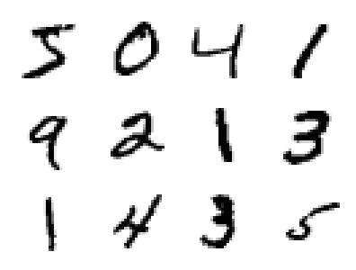
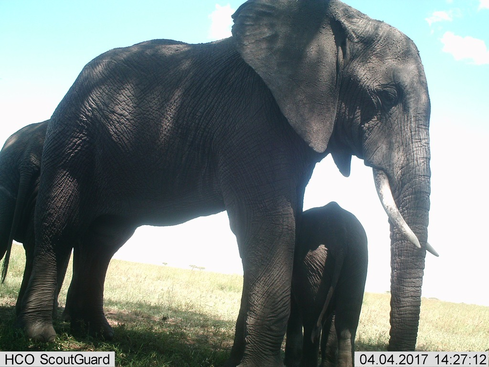
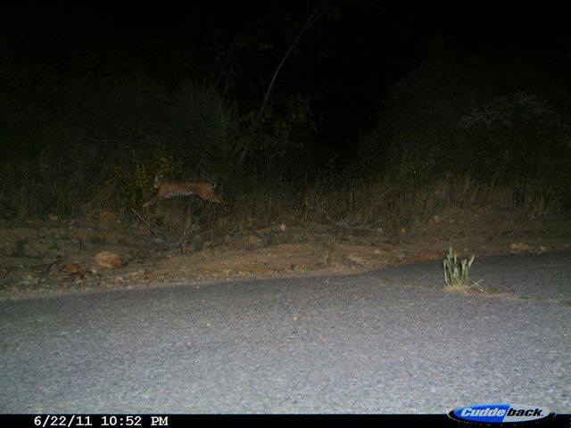
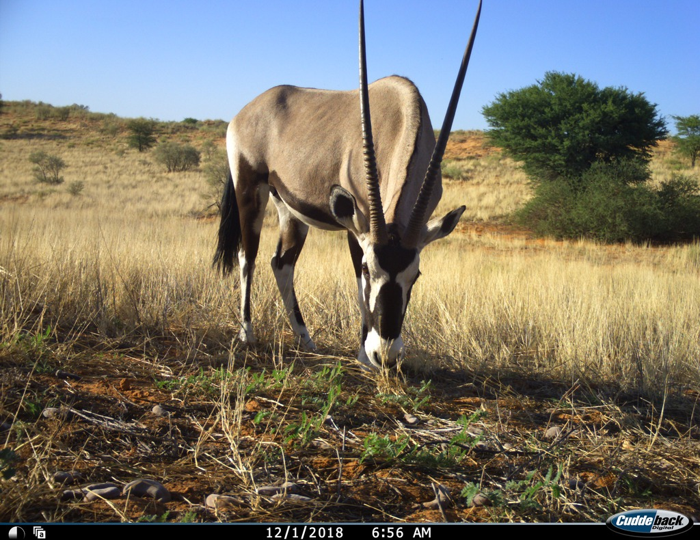
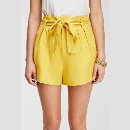
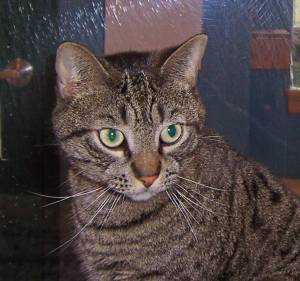
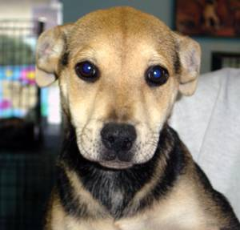
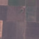

Exercises
Day 1 and Day 2
Exercises Day 1 and Day 2 can be found here: Link
Datasets
The following datasets can be used in the exercises.
MNIST
The classic dataset of 28×28 grayscale handwritten digits (0–9), 60k train and 10k test images. Used in 00_pytorch as a small, fast-loading dataset. Loaded directly from torchvision.datasets.MNIST.

Snapshot Safari SER (Serengeti)
Camera-trap images from Serengeti National Park, curated to ten species classes plus an empty class.

There are different variants:
- balanced classes
- random sample (unbalanced)
- random sample with crops
Source: LILA BC
Caltech Camera Traps (CCT20)
A balanced 8-class subset of the CCT20 benchmark (200 images per class: bobcat, cat, coyote, empty, opossum, rabbit, raccoon, squirrel).

Source: LILA BC
Snapshot Kgalagadi
A subset of Snapshot Kgalagadi Season 1 (Kalahari camera traps) covering six classes: empty, gemsbokoryx, birdother, steenbok, ostrich, jackalblackbacked. Heavily imbalanced — empty accounts for ~78% of the ~3400 images.

Source: LILA BC
Amazon Berkeley Objects (ABO) Furniture
A curated subset of the Amazon Berkeley Objects dataset, restricted to six furniture categories (bed, chair, lamp, sofa, storage, table) with multiple views per item, ~25k centre-cropped 224×224 JPEGs. The multi-view structure makes it well-suited for image retrieval. Used as the default dataset in

DeepFashion (In-Shop Retrieval)
A 5-class coarse-label subset (dresses, outerwear, pants, skirts, tops) of the DeepFashion In-Shop Clothes Retrieval Benchmark from MMLAB/CUHK, ~3300 images split by item ID so all views of one product stay in the same split.

AMI-Br (Atypical Mitotic Figures — Breast)
128×128 histopathology patches of mitotic figures from human breast cancer slides (subset of TUPAC16 + MIDOG21), with binary labels for normal vs. atypical mitoses. Used in as a small, domain-shifted target task for parameter-efficient fine-tuning (LoRA).

Microsoft Cats vs Dogs
The full Microsoft/Kaggle Cats and Dogs dataset (~25,000 colour photos of cats and dogs). Two corrupt source images (Cat/666.jpg, Dog/11702.jpg) are removed during preparation. Classes are balanced (50/50). Images are variable-size JPEGs, typically 150-500 px on the longer side.
- Source: Microsoft (https://www.microsoft.com/en-us/download/details.aspx?id=54765)
- License: Microsoft Terms of Use (educational/non-commercial)
- Split: stratified 70/15/15, seed 42
- Classes: Cat, Dog (~12,500 each)
- Total: ~25,000 images


Concrete Cracks
The Ozgenel et al. Concrete Crack Images dataset (~40,000 227x227 JPEG images of concrete surfaces), with binary labels for intact (Negative) vs. cracked (Positive) surfaces. Well suited for teaching binary classification and industrial defect detection.
- Source: Mendeley Data, doi: 10.17632/5y9wdsg2zt.2
- License: Creative Commons Attribution 4.0 (CC BY 4.0)
- Split: stratified 70/15/15, seed 42
- Classes: Negative (~20,000), Positive (~20,000)
- Total: ~40,000 images, 227x227 px

EuroSAT RGB
The EuroSAT land-use classification dataset (RGB variant, ~27,000 images across 10 classes from Sentinel-2 satellite imagery). Images are 64x64 px, making this an interesting case for discussing domain shift from ImageNet pretraining.
- Source: Zenodo record 7711810 (https://zenodo.org/records/7711810)
- License: MIT License
- Attribution: Helber et al. (2019), IEEE JSTARS, doi: 10.1109/JSTARS.2019.2918242
- Split: stratified 70/15/15, seed 42
- Classes (10): AnnualCrop, Forest, HerbaceousVegetation, Highway, Industrial, Pasture, PermanentCrop, Residential, River, SeaLake (~1,900-3,000 each)
- Total: ~27,000 images, 64x64 px
